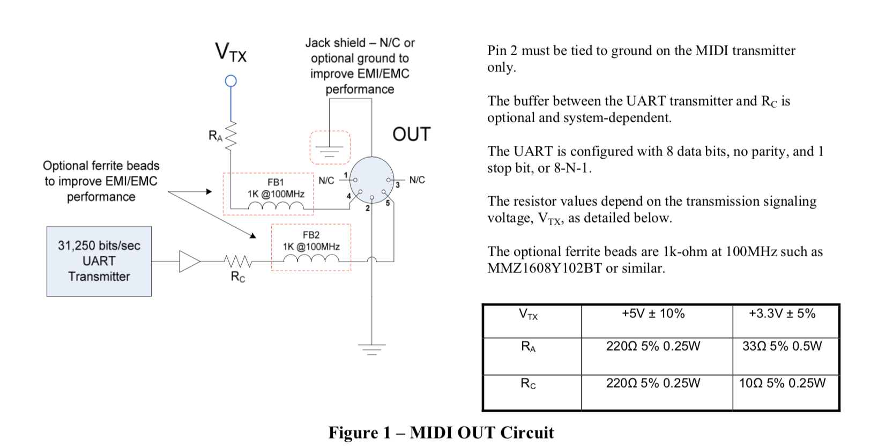

(CA-033) MIDI 1.0 Electrical Specification Update [2014]
The MIDI 1.0 Specification includes an Electrical Specification which uses a 5-Pin DIN connector and 5 Volt electronics as was common at that time. The Specification was updated in 2014 to reflect current design requirements such as 3.3 Volt circuitry and reduced RF interference.
Electrical Specification Update 1.1 [2014]
This updates the MIDI 1.0 Electrical Specification to include 3.3-volt signaling. This update also adds optional ferrite bead RF filters to the signal pins, and optional grounding provisions for the grounding shield connectors on the MIDI jacks.
